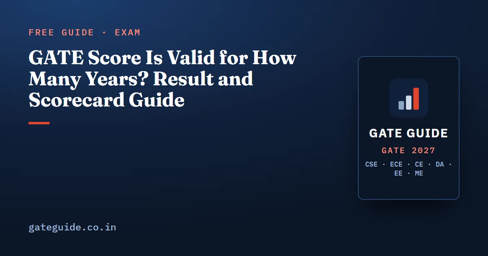

GATE Score Is Valid for How Many Years? Result and Scorecard Guide

The GATE score is valid for three years from the date the result is announced. That is the answer the official GATE 2027 brochure and FAQ give, for every paper. The GATE 2027 result date is 19 March 2027, so a GATE 2027 score stays valid until about March 2030. This guide explains what happens between the exam and the result, who gets a GATE scorecard, how to download it, and what the three years really mean.
In this guide
Key takeaways
- A GATE 2027 score is valid for three years from the date of the result. After that, no information on it is available.
- The official result date is 19 March 2027, announced on GOAPS. Dates are liable to change.
- The scorecard is free to download in a window at the end of March; after it, it costs ₹500 per paper until 31 December 2027.
- Only candidates at or above their paper's SC, ST and PwD qualifying mark get a scorecard. Others get a performance report later.
- There is no hard copy. Save the PDF in more than one place.
- Qualifying does not guarantee admission, a scholarship or a job; the official site says so plainly.
The words on result day
Four terms carry the whole topic. Learn them before anything else.
- Marks are your result out of 100. For a paper held in more than one session, they are normalised marks.
- The GATE score is your marks placed on a scale out of 1000 by a formula in the brochure.
- The qualifying mark is the lowest mark that counts as passing in your paper, for your category.
- The scorecard is the official PDF of your result, downloaded from GOAPS. It is the document institutes and recruiters rely on.
How the score is computed from the marks is explained in GATE score calculation and normalisation. This guide stays with what you receive and how long it lasts.
What happens between the exam and the result
The brochure lists five steps after the last exam session. Their dates are announced on the official website after the exam.
- Your recorded responses appear in your GOAPS account.
- The answer keys for every paper are displayed on the official website.
- You may contest an answer key within the stated dates, by paying a fee.
- Evaluation is finalised and the results are announced.
- Qualified candidates download the scorecard from GOAPS.
| Milestone | Official date (checked 10 October 2026) |
|---|---|
| Exams | 6–7, 13–14 and 20–21 February 2027 |
| Responses, answer keys, contest window | Announced after the exam |
| Result on GOAPS | 19 March 2027 |
| Free scorecard download | To be announced (the FAQ says end of March) |
| Paid scorecard download, ₹500 per paper | After the free window, up to 31 December 2027 |
| Scorecards stop being issued | From 1 January 2028 |
The result date falls 26 days after the last exam day. Every exam date is listed with its planning notes in GATE 2027 exam dates.
Remember: The marks you see on the GOAPS portal are for your information only. The official FAQ says a printout of that page is not a valid document. Only the downloaded scorecard counts.
Who gets a scorecard, and who does not
Each paper has its own qualifying marks, worked out after the exam. The brochure sets the General line first, and the other categories from it:
Here is the mean and the standard deviation of the marks of everyone who wrote that paper. The OBC-NCL and EWS line is of the General line. The SC, ST and PwD line is of it.
The scorecard rule uses the lowest of these lines. The official FAQ says a scorecard goes only to candidates at or above the SC, ST and PwD qualifying mark of their paper.
A worked example (invented numbers)
Suppose a paper ends with . That lies between 25 and 40, so the General line is 33. The OBC-NCL and EWS line is . The SC, ST and PwD line is .
Now take three candidates. A General candidate with 31 marks is below 33, so has not qualified, yet is above 22 and still gets a scorecard. An OBC-NCL candidate with 30 has qualified, since 30 is above 29.7. A candidate with 20 is below 22 and gets a performance report later instead of a scorecard.
Trap: Getting a scorecard is not the same as qualifying. A scorecard shows your marks, but whether you qualified is judged against your own category's line.
What the lines looked like last year
These are real figures, published by IIT Guwahati for GATE 2026. They are history, not a forecast for 2027.
| Paper (2026) | General | OBC-NCL/EWS | SC/ST/PwD |
|---|---|---|---|
| CS | 30 | 27 | 20 |
| EC | 26.4 | 23.7 | 17.5 |
| EE | 27.7 | 24.9 | 18.4 |
| ME | 25.2 | 22.6 | 16.7 |
| CE | 28.7 | 25.8 | 19.1 |
| DA | 26.4 | 23.7 | 17.5 |
The lines differ from paper to paper because each one comes from that paper's own marks.
How to download the GATE scorecard
The download happens on GOAPS, the same portal you applied on.
- Keep your Enrolment ID and password from registration. You log in with them.
- On result day, log in and read your marks and score, but treat that screen as information only.
- When the free window opens, download the scorecard PDF.
- Check your name, photo and paper. The scorecard uses the name from your application form and the photo you uploaded, the same one as on your admit card.
- Save copies on your phone, your email and an offline drive.
There is no hard copy at any stage. If you miss the free window, you can still download it for ₹500 per paper until 31 December 2027. From 1 January 2028, GATE 2027 scorecards are not issued at all.
The official FAQ also warns that issued scorecards cannot be corrected. Their data is already shared with admitting institutes, COAP and PSUs, so a discrepancy must be taken up with them. That is one more reason to get your name right on the form, as covered in GATE 2027 registration and application fee.
What three years of validity really means
The brochure says the GATE 2027 score is valid for three years from the date of announcement of results. If the result comes on 19 March 2027 as scheduled, the score lasts until about March 2030. The FAQ adds that the validity is printed on the scorecard, so read the exact date there.
Validity is the longest the score can be used. It is not a promise that every user accepts it for three years. Each institute, scholarship scheme or public sector recruiter writes its own rule about which GATE years it takes. Read that clause in each advertisement before you apply.
| Question | Official answer |
|---|---|
| How long is the score valid? | Three years from the result date |
| What happens after that? | No information on the score is available |
| Who decides if an older score is accepted? | The admitting institute or recruiter |
| Does qualifying guarantee admission or a job? | No; the official site says so |
In one line: Three years is the outer limit set by GATE; the rule that applies to you is the one written by whoever reads your scorecard.
Two surprises on the result page
Negative marks. The FAQ says net marks can be negative, since wrong MCQ answers cost marks. The marking that causes this is the same for every paper, as explained in the GATE exam pattern and marking scheme (written for CSE, but the marking scheme is common to all papers).
A negative score with positive marks. The FAQ says this too is possible. The score formula maps the qualifying mark to 350, so marks far below the line fall below zero on that scale.
Two papers also differ in how they are ranked. For Geology and Geophysics (GG) and Humanities and Social Sciences (XH), the brochure gives a separate score and rank based on the section you chose. No other paper gets a section-wise score or rank.
The marks column is the only one you control before February. Each of the six GATE 2027 books has 10 full mock tests, so you can measure that column honestly before the real paper does.
Quick revision
- A GATE score is valid for three years from the result date; for GATE 2027, until about March 2030.
- The GATE 2027 result date is 19 March 2027, on GOAPS. Confirm it on the official site.
- The scorecard is free in a window at the end of March, then ₹500 per paper until 31 December 2027.
- From 1 January 2028, no GATE 2027 scorecard is issued. There is never a hard copy.
- A scorecard goes only to candidates at or above the SC, ST and PwD qualifying mark of their paper.
- Qualifying is judged against your own category's line: General, then 0.9 and 2/3 of it.
- Each institute or recruiter decides which GATE years it accepts.
GATE Guide is an independent site and is not affiliated with IIT Madras, IISc or GATE.
Frequently asked questions
GATE score is valid for how many years?
Three years from the date the results are announced, according to the GATE 2027 information brochure and FAQ. No information on the GATE 2027 score will be available after that period. The FAQ adds that the validity is printed on the scorecard itself. Each institute or recruiter still decides which GATE years it accepts.
When is the GATE 2027 result date?
The official important dates page lists 19 March 2027 for the announcement of results on GOAPS, the portal you registered on. The page says all dates are liable to change, so check gate2027.iitm.ac.in close to the day. The free scorecard download dates are marked as to be announced.
Is there a fee to download the GATE scorecard?
Not during the free download period, which the official FAQ places at the end of March and the dates page lists as to be announced. After that, the brochure charges ₹500 per test paper, with downloads possible up to 31 December 2027. From 1 January 2028, GATE 2027 scorecards will not be issued at all.
Who gets a GATE scorecard?
The official FAQ says the scorecard is issued only to candidates whose marks are at or above the SC, ST and PwD qualifying mark of their paper. Candidates below that line get no scorecard, but can download a performance report later, on a date the website will announce.
Can I get a hard copy of my GATE scorecard?
No. The brochure says there is no provision for hard copies of the GATE 2027 scorecard. You download it from GOAPS, and the brochure strongly recommends keeping the electronic copy safe for future use. The marks shown on the GOAPS portal itself are for information only and are not a valid document.
Sources
- GATE 2027 official website (IIT Madras)
- GATE 2027 important dates (official)
- GATE 2027 Information Brochure (official PDF)
- GATE 2027 FAQs (official)
- GATE 2026 cut-off marks (IIT Guwahati, official)
Dates, fees and the syllabus are set by the GATE 2027 organising institute and can change. Always confirm at gate2027.iitm.ac.in.